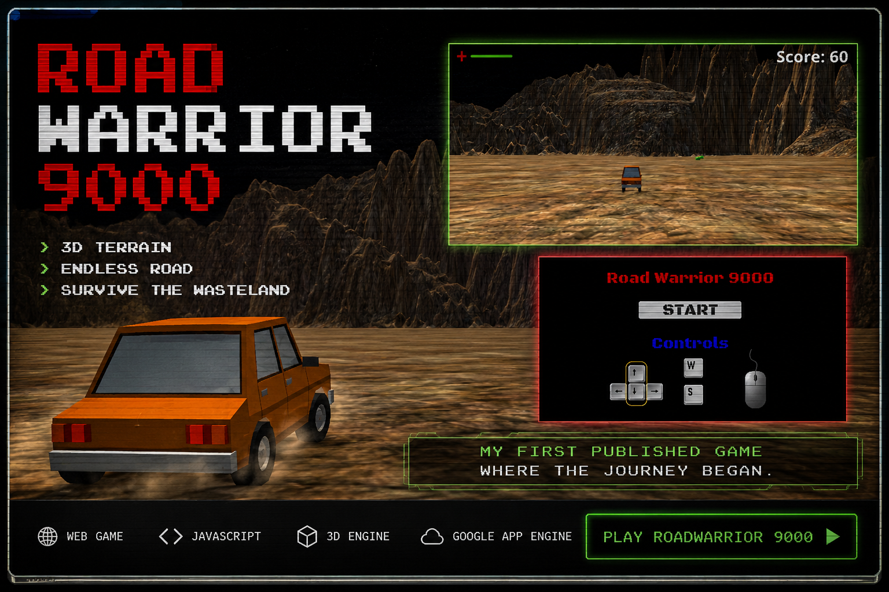
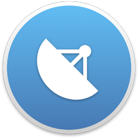
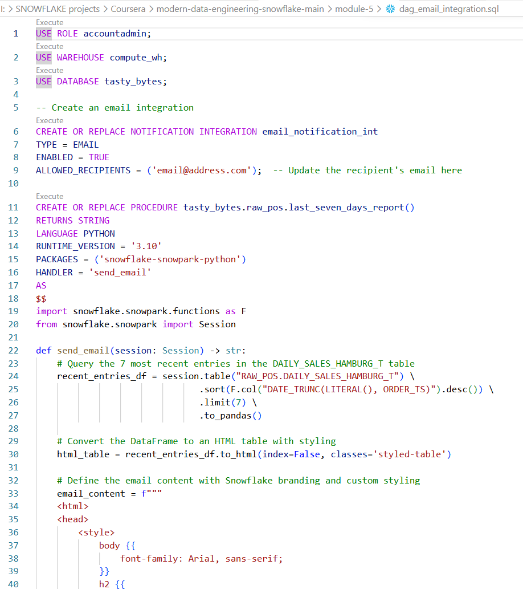

> PERSONAL ARCHIVE LOADED
Personal Projects
Side quests, experiments, prototypes, and systems built out of curiosity,
creativity, and a desire to keep learning.

🎮 Road Warrior 9000
★ My First Published Game ★
> Description
Where my software development journey began.
Originally deployed on Google App Engine,
RoadWarrior 9000 taught me the fundamentals
of building software, solving problems, and
shipping applications to the web.
▶ PLAY ONLINE
WEB Game
JAVASCRIPT
3D ENGINE
Google App Engine
> Built With
- Unity 3D game engine
- HTML5
- CSS3

GOES Live Wallpaper
A Windows desktop utility for live satellite imagery
> Description
GOES Live Wallpaper is a Windows desktop utility that automatically downloads the latest high-resolution satellite imagery from NOAA's GOES weather satellites and sets it as the Windows desktop wallpaper.
C#
.Net
Windows Forms
Image Processing
Windows Desktop Integration
> Key Features
- Automatically downloads the latest GOES satellite imagery
- Updates the Windows desktop background
- Supports scheduled automatic refreshes
- Runs quietly in the background
VIEW GITHUB

MARICIA.EXE
Retro portfolio website inspired by classic computer terminals.
> Description
Built as a personal brand hub to connect resume, projects,
GitHub, creative work, and technical storytelling in one place.
HTML
CSS
GitHub
Retro UI
> Built With
- Custom HTML and CSS layout.
- Retro terminal-inspired visual system.
- Separate archives for work, personal builds, games, and art.

Chat Thing
Chat application experiments evolving into intelligent tools.
Chat UI
Prototype
App Design
GitHub
> Concept
- Chat interface experiments.
- Tool-building practice.
- Prototype application logic.
- Future AI assistant ideas.
VIEW GITHUB

Snowflake Learning Journey
Practice projects for building modern data warehouse skills.
> Purpose
Personal learning projects focused on Snowflake SQL,
data cleaning, staged tables, views, and analytics workflows.
Snowflake
SQL
Data Cleaning
GitHub
> Practice Areas
- Cleaning messy datasets.
- Creating reusable views.
- Working with staged data.
- Building confidence with modern data tools.
VIEW GITHUB

Automation Lab
Small tools, scripts, and experiments for reducing repetitive work.
> Purpose
A collection of small personal experiments using Python,
PowerShell, Power Automate, and file-processing workflows.
Python
PowerShell
Power Automate
File Tools
> Experiments
- Batch file conversion.
- Folder organization utilities.
- Data cleanup helpers.
- Workflow prototypes.

MTB Adventure Log
Future project concept for tracking rides, trails, photos, and gear notes.
> Purpose
A planned personal app idea combining mountain biking,
trail notes, trip memories, and gear experiments.
Project Idea
Outdoor Data
UX Design
Personal App
> Planned Features
- Trail and ride log.
- Bike setup notes.
- Photo archive.
- Adventure dashboard.